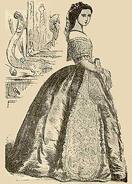

Picturing Charlotte Temple

These five illustrations, and the captions identifying their original sources, all are taken from Charlotte Temple, edited and introduced by Francis W. Halsey (New York: Funk & Wagnalls, 1905).
BACK TO ILLUSTRATIONS PAGE